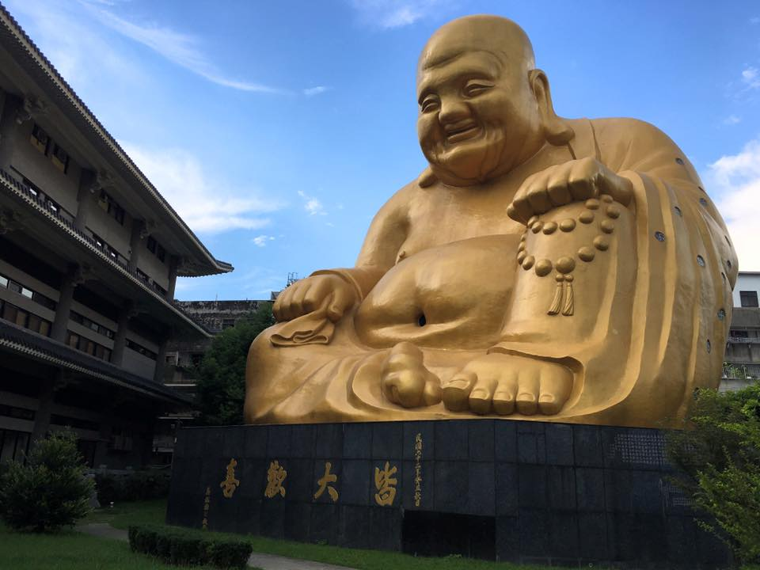
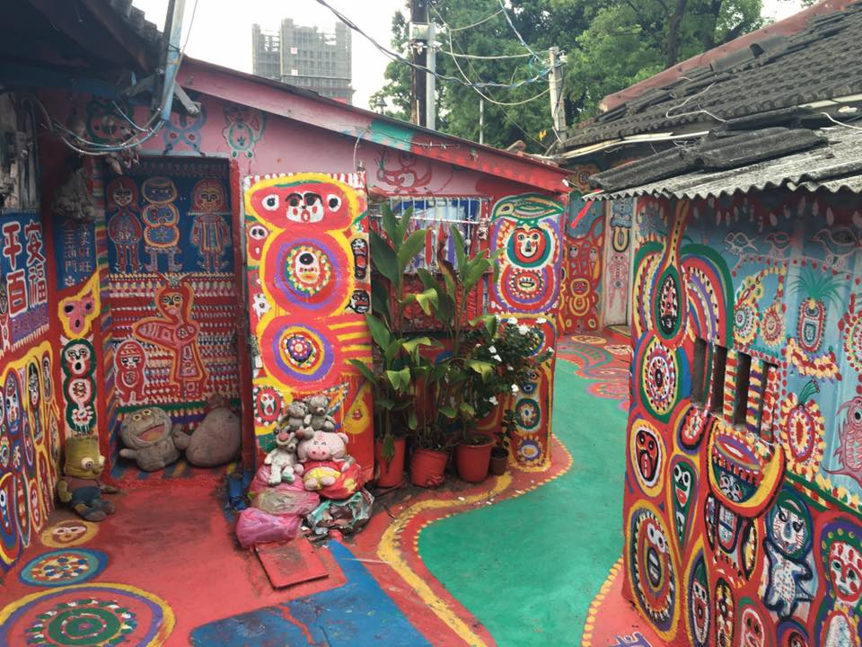
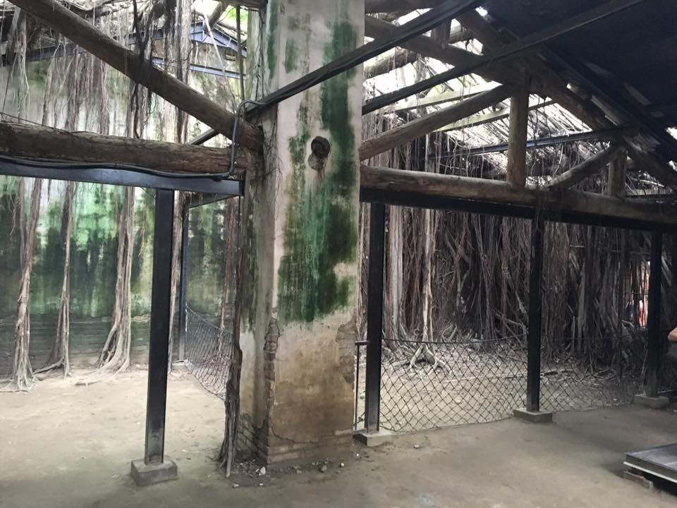
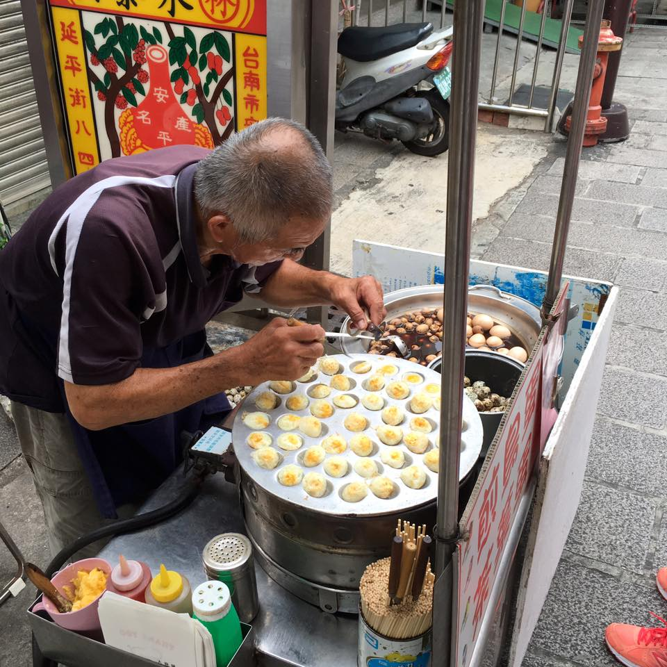
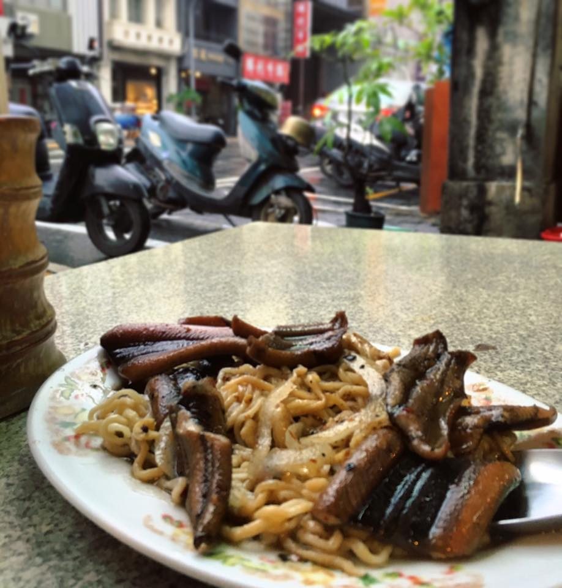
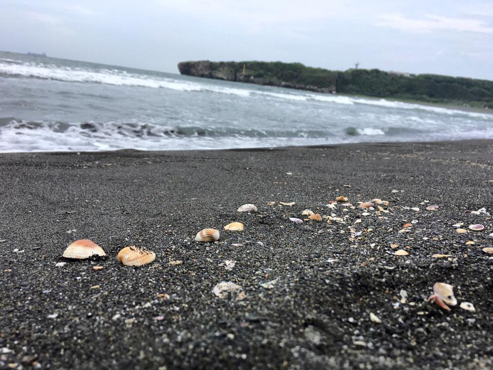
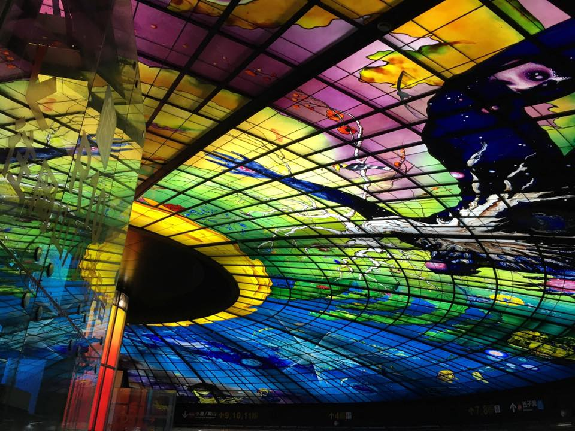

For my last week in Taiwan, I decided to backpack down the West side of Taiwan for a few days. I went alone, stayed in Airbnb rooms (super cheap, between $15-25 a night), and took trains. I only packed a backpack because of the convenience.
Taizhong
The first thing I went to go see in Taizhong was the Pao Chueh temple. It was pretty cool, and hardly any other tourists were there.
Next I went to the Rainbow Village. An old man painted the entire thing. He was actually there and I chatted with him for a bit.


At night I went to the night market for supper. I wasn't in Taipei anymore, and I got a lot of attention for being a foreigner. The farther away from Taipei you go, the fewer and fewer foreigners there are. I had ordered an ice cream dessert, and I didn't know one of the characters on the menu, so the restaurant owner went and found the only other white guy in the restaurant to have him teach it to me. We basically looked at each other kinda confused.
Tainan
The next morning I took a train to Tainan. First I went to the Anping Tree House, where a tree basically took over an entire old building.
The Anping area also has a large fort, some food stalls, and other cool things to see.
I heard that in Tainan, you have to go try eel noodles. I Googled and found a blog about a really good eel noodle shop, so I went there. I figured it would be pretty famous and crowded, because I just picked the first one I found, but it was actually pretty typical with hardly any people there. The eel noodles were amazing!
At night I took a train to Gaoxiong and slept there.
Gaoxiong
What I was most excited to see in Gaoxiong was the wild monkeys. There's a mountain right on the edge of town that's full of them. I told my host family I wanted to go see them, and the host family dad told me not to go, because the monkeys are "not friendship." Early in the morning I set off to go climb the mountain and see them. There were packs of wild dogs barking at me but they kept their distance. The first monkey I saw was huge and walking straight towards a family. I was a little nervous, because my host family dad, the internet, and my Airbnb host had all told me not to go see them because they can be aggressive, but I'd never seen wild monkeys before and I couldn't just not see them while I was in Gaoxiong. Farther up the mountain I found a spot with benches and just sat there. Eventually a huge pack of wild monkeys came and played right next to me. I stayed still and they basically just ignored me. Seeing the wild monkeys was probably my favorite part of my whole backpacking trip. Here's a video I uploaded to Youtube:
Next I took a ferry to Cijin Island. I rented a bicycle for about $1 USD and rode around. The beach was beautiful but it was too dangerous to swim there. I got my photo taken in an ice cream shop for their wall of photos. I didn't realize it at the time, but I got absolutely fried (the air is cleaner there so I think that's why, because in Taipei I wouldn't wear sunscreen and I never really got burned.)
I had some time to kill, so I went to an old British embassy there. It was a little awkward because I was the only white person there, and so many of the exhibits talked about the bad things that white missionaries had done in the area. I met a Chinese girl from Beijing who asked if I wanted to drink tea with her. The rest of her tour group crowded around our table and listened to us chat in English and Chinese, which was a strange experience, I felt like a celebrity! When they left, a lot of them were trying to speak English and were saying things like "See you tomorrow!" (even though I wasn't going to) and "Good morning!"
Tainan also has a train station with the most beautiful glass ceiling. I went at night, and there was live piano music and a light show.
Overall, I liked Gaoxiong a lot. I think Taipei is better, but Gaoxiong probably comes in second place. The food was amazing, there was an ocean, and also a mountain full of wild monkeys. I hope to go back someday!
A link to my full album of Taiwan photos can be found here.
Questions? Comments? Don't hesitate to contact me!